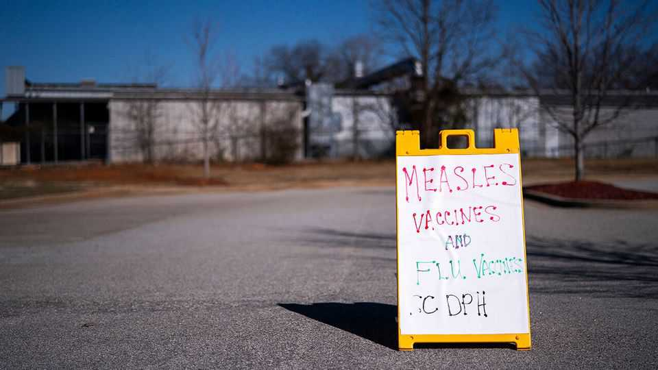
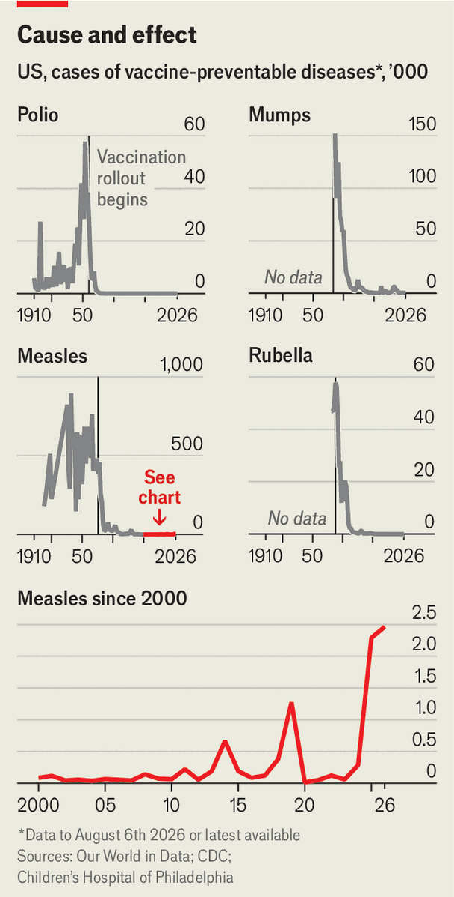

Donald Trump takes a fresh swipe at childhood vaccines
A new order only adds to confusion for parents

Aug 13th 2026
BACK WHEN he was a reality-TV star, Donald Trump tweeted: “Healthy young child goes to doctor, gets pumped with massive shot of many vaccines…AUTISM.” More than 12 years later, on August 10th, Mr Trump acted on the thinking behind that dubious claim. A new executive order says the combined measles, mumps and rubella vaccine should be split into three. It advises giving those and other jabs at separate doctor visits. And it puts childhood vaccines into three buckets: those recommended for everyone (covering 11 diseases and infections, down from 18), those for high-risk groups and those to be decided on after talking to a doctor.
There is no evidence that vaccines cause autism. Nor is there evidence that spreading out vaccines is beneficial. In fact, doing so increases the window in which kids are vulnerable to infection. Doctors’ groups, therefore, lined up to denounce the order. The head of the American Academy of Paediatrics called it “not only disheartening but dangerous”. It puts “children’s health at risk”, said the boss of the American Medical Association.

The good news, then, is that Mr Trump’s order will have little practical effect. States, not the federal government, normally set vaccination requirements for schoolchildren. And most of them are guided by abundant evidence that vaccines have driven down rates of infectious disease by a miraculous degree (see chart).
But as the administration injects more doubt and confusion into decisions over vaccines, parents are increasingly declining them. Measles vaccination coverage among kindergarteners is 92.5%, down from 95.2% in 2019. That is worryingly low: an estimated 92-94% of a community must be immune to stop measles spreading. Many areas are already below that threshold, helping to explain why 2026 has already outpaced all of 2025 for measles cases.
The executive order is not the administration’s first swing at vaccines. In January the Centres for Disease Control and Prevention (CDC) tried to pare back the schedule of jabs for kids. A judge halted the changes; the case is being appealed. In May another executive order instructed the CDC to copy countries that recommend fewer vaccines. Most consequentially, the administration has cut funding for next-generation mRNA vaccines.
Nearly 80% of Americans think vaccines are safe, according to an Economist/YouGov poll, including most Republicans. Mr Trump’s favoured pollster has urged him to focus on other parts of Robert F. Kennedy junior’s agenda, like the health secretary’s promotion of nutritious food. Mr Trump’s decision to ignore that advice shows that vaccines are not just Mr Kennedy’s obsession, but the president’s too. ■
Stay on top of American politics with The US in brief, our daily newsletter with fast analysis of the most important political news, and Checks and Balance, a weekly note that examines the state of American democracy and the issues that matter to voters.